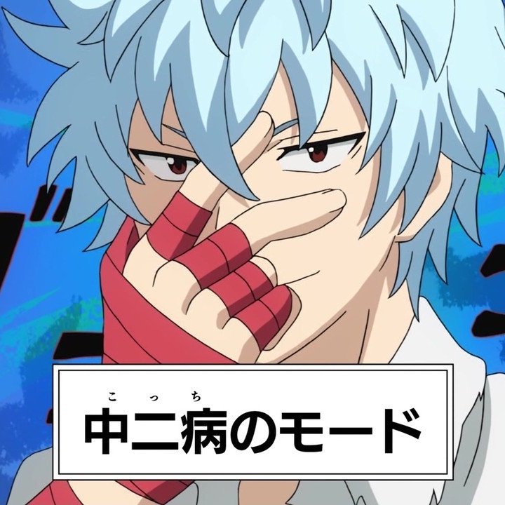

診断結果
あなたは「邪気眼系中二病」です。
特徴
- 自分には「選ばれし力」や「封印された力」があると思う。
- よくある設定：「右腕の痛みは封印された魔力のせいだ」「俺に近づくな、危険だ」。
- ノートに独自の魔法陣や呪文を描いたり、技名を考えたりする。
日常生活でのアドバイス
- 創作やファンタジーを楽しむ気持ちと現実との折り合いを付けながら生活しましょう。
- 想像力を活かして小説やマンガを作る趣味を始めると自己表現の場が広がります。
- 他人に押し付けないように注意しつつ、自分の楽しみとして大切にしてください。
あなたに似ているキャラクター
- めぐみん（この素晴らしい世界に祝福を！）
-
 田中眼蛇夢（スーパーダンガンロンパ2）
田中眼蛇夢（スーパーダンガンロンパ2）
-
 津島善子（ラブライブサンシャイン）
津島善子（ラブライブサンシャイン）
-  海藤瞬（斉木楠雄のΨ難）
-
 神崎蘭子（アイドルマスターシンデレラガールズ）
神崎蘭子（アイドルマスターシンデレラガールズ）
- 黒須あろま（プリパラ）